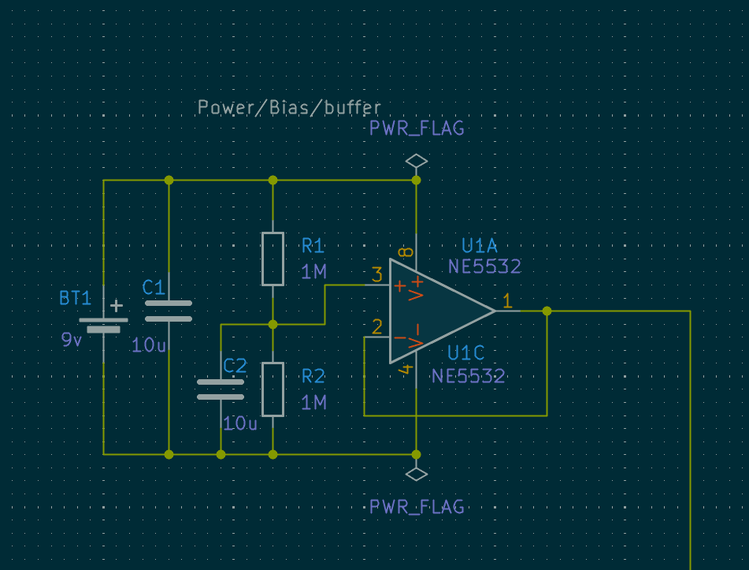

Distortion Pedal overview
Schematic Overview
Op Amp Bias
 since the circuit is powered by a 9v source I use an opamp to buffer the voltage source and create a 4.5v bias that I can use for the input of the distortion pedal to center the audio signal in the middle of 9v range decoupling capacitors are used to remove noise. the use of an op amp isn't necessary but I choose to use it as I wanted to use a 8 dip op amp which typically contains two different op amps. In addition the use of a voltage divider to spit the voltage can isn't the most secure way to obtain 4.5v as resistance changes could potentially change the output voltage. The use of the op amp act as a buffer so the 4.5 voltage is isolated from any potential resistance changes when connecting 4.5v to another system